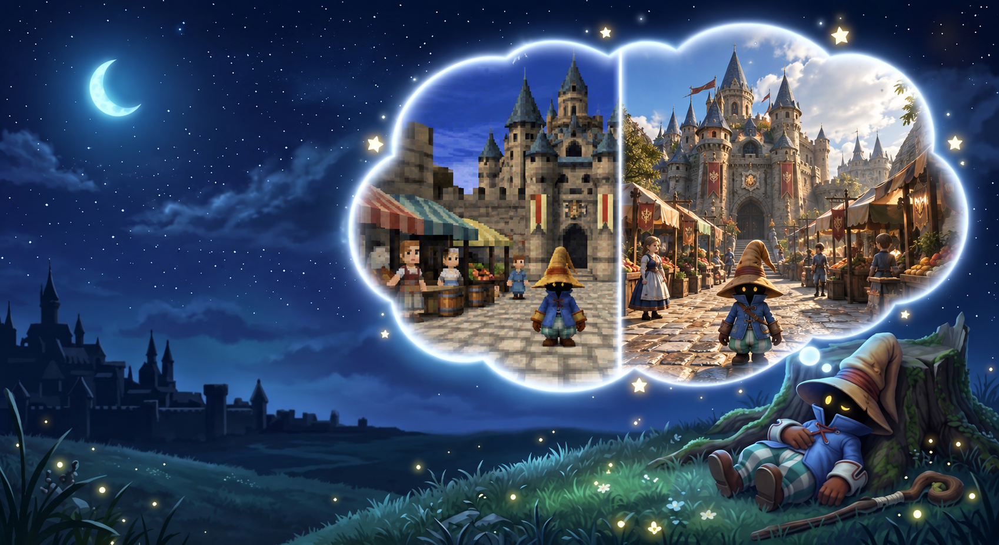
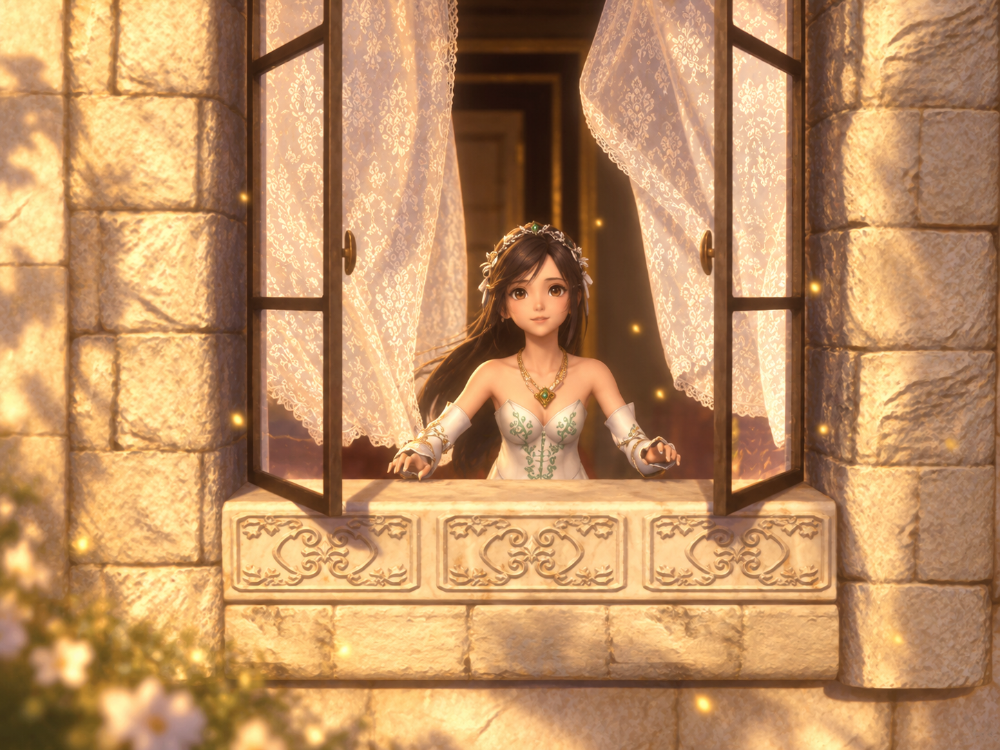

The Dream

Final Fantasy IX has remained my favorite game of all time, but its breathtaking full-motion videos are still trapped behind the heavy compression and standard-definition limits of the year 2000. Vivi's Dream was born from a simple desire: to bring these iconic cinematics into the modern era with the visual fidelity they deserve, without sacrificing an ounce of their original soul. Rather than settling for a generic smoothing of nostalgic memories, this project is about honoring the world of Gaia and revitalizing every frame so the story, atmosphere, and emotion feel just as vivid on modern displays as they did the very first time we saw them.
The First Attempt
The initial phase of the project tackled the FMVs through an automated super-resolution pipeline using a custom-tuned Real-ESRGAN model. Raw cutscene video was demuxed into uncompressed frame sequences via FFmpeg, passed through model weights optimized to suppress heavy 240p compression artifacts, and reassembled with lossless audio. While this approach effectively suppressed macroblocking and aggressive color banding, it quickly exposed the fundamental limits of traditional GAN-based upscalers: Real-ESRGAN can only interpolate and smooth existing pixel clusters, incapable of inferring fine architectural textures, fabric weaves, or cinematic lighting that never existed in the source renders. Ultimately, the process gave scenes an unnatural, "painted-over" look while introducing distinct visual artifacts—most notably smeared pixels, blurred micro-details, and temporal inconsistencies across the individual frames and finalized video.
Software Stack
- Frame Demuxing & Assembly: FFmpeg (lossless image sequence extraction, color tagging, and audio mapping)
- Upscaling Engine: Custom Real-ESRGAN architecture using fine-tuned model checkpoints
- Inference Runtime: Python, PyTorch (CUDA-accelerated batch execution), and OpenCV
- Encoding & Delivery: FFmpeg (NVENC H.265 / ProRes encoding for minimal generation loss)
Hardware Profile
- Machine: Lenovo Legion Pro 7i Gen 10
- Processor: Intel Core Ultra 9 275HX
- GPU: NVIDIA GeForce RTX 5080 Laptop GPU (16GB GDDR7 VRAM)
- System Memory: 32GB DDR5 RAM
The Direction Forward

Moving beyond the limitations of traditional super-resolution means abandoning simple pixel interpolation in favor of true generative reconstruction. To eliminate the smoothed, painted-over artifacts and smeared pixels introduced by GAN models, the next phase of Vivi's Dream transitions the entire workflow into a generative pipeline powered by FLUX.1 [dev] within ComfyUI. Instead of guessing details from corrupted low-resolution data, this architecture uses guided diffusion to rebuild each frame from the ground up while strictly honoring the cinematic direction of the original cutscenes.
Next-Gen Pipeline Architecture
- Generative Engine (FLUX.1 [dev] via ComfyUI): Replaces legacy upscaling networks with a high-parameter diffusion model running inside a modular node graph, synthesizing realistic textures and volumetric light rather than stretching existing pixels.
- Deterministic Geometry Control (ControlNet): Extracts depth maps, edge lines, and character silhouettes directly from the original PS1 frames, anchoring the generative model so camera perspective and character anatomy remain structurally identical without visual hallucination.
- Aesthetic Accuracy (Custom LoRA Training): Integrates custom-trained Low-Rank Adaptation (LoRA) weights focused on Final Fantasy IX's distinct storybook aesthetic, precisely directing the synthesis of Vivi's coarse fabric weave, Alexandria’s weathered cobblestone, and stylized architectural proportions.
- Temporal Coherence & Sequence Assembly (FFmpeg & Latent Blending): Sequences cutscene frames into batches with linked latent noise seeds and optical flow masking, using FFmpeg for pre-processing extraction and final high-bitrate master encoding to prevent inter-frame flickering.